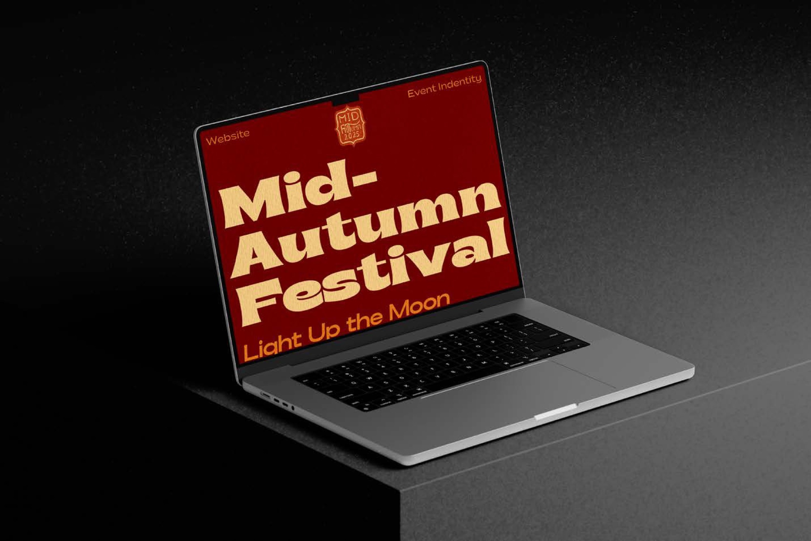
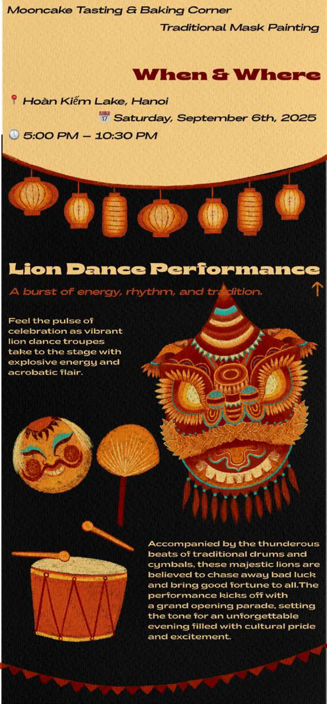
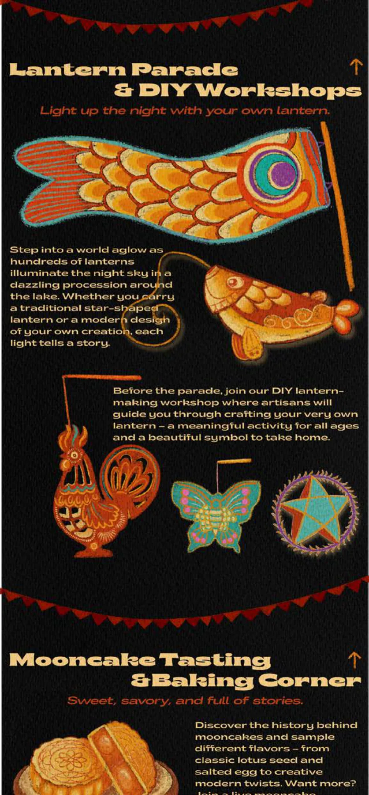
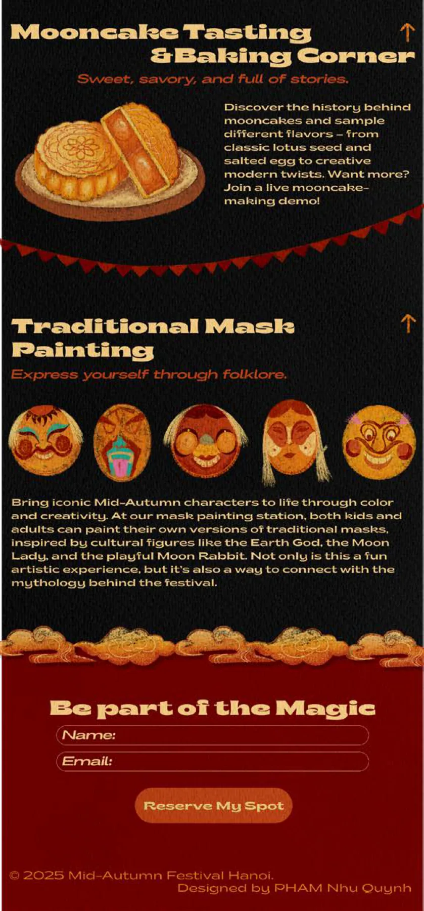

PHAM Nhu Quynh
Contact
PHAM Nhu Quynh
Contact
“Event Identity”: Mid-Autumn FestivalOne-page website · UX/UI for a Festive, Cultural & Magical Event
Figma
« Identité événementielle » : Mid-Autumn FestivalSite one-page · UX/UI pour un événement festif, culturel et magique
Figma
Event Identity: Identité événementielle : Mid-Autumn Festival
Intention
For this project, I chose to design the visual identity for the Mid-Autumn Festival. My selected medium is a one-page website, focusing on UX/UI design that reflects the festive, cultural, and magical atmosphere of the event.
Pour ce projet, j’ai choisi de concevoir l’identité visuelle de la fête de la Mi-Automne. Le support retenu est un site web one-page, avec un travail UX/UI qui restitue l’atmosphère festive, culturelle et magique de l’événement.

Website screensÉcrans du site




Site contentContenu du site
“Mid-Autumn Festival — Light Up the Moon”. The Mid-Autumn Festival, also known as the Moon Festival, is a cherished celebration of reunion, reflection, and folklore.
« Mid-Autumn Festival — Light Up the Moon ». La fête de la Mi-Automne, aussi appelée fête de la Lune, est une célébration chère à tous, placée sous le signe des retrouvailles, de la contemplation et du folklore.
Sections: What’s Happening? · When & Where (Hoàn Kiếm Lake, Hanoi — Saturday, September 6th, 2025, 5:00 PM – 10:30 PM) · Lion Dance Performance · Lantern Parade & DIY Workshops · Mooncake Tasting & Baking Corner · Traditional Mask Painting · Be part of the Magic (sign-up form: Name, Email, “Reserve My Spot”).
Rubriques : What’s Happening? · When & Where (lac Hoàn Kiếm, Hanoï — samedi 6 septembre 2025, 17 h – 22 h 30) · Lion Dance Performance · Lantern Parade & DIY Workshops · Mooncake Tasting & Baking Corner · Traditional Mask Painting · Be part of the Magic (formulaire d’inscription : Name, Email, « Reserve My Spot »).